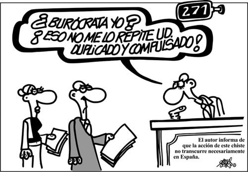

PRINCIPALES NOVEDADES DE LA LEY
Las resumimos y nos centramos en las que nos interesan como docentes:
Implantación del EXPEDIENTE DIGITAL
El objetivo del legislador es el fomento de la tramitación electrónica de los expedientes, y el uso de la firma digital para la presentación de escritos y documentos ante la Administración.
Se pretende la sustitución progresiva de la presentación de escritos físicos por documentos electrónicos, así como la generalización de la comunicación telemática, vía e-mail o mediante mensaje de texto.Determinados colectivos están obligados a relacionarse con la Administración únicamente por vía electrónica
Participación ciudadana en la elaboración de leyes y reglamentos: se establece un trámite de audiencia novedoso, que busca fomentar la participación.
Los sábados pasan a ser inhábiles a efectos administrativos, en congruencia con lo dispuesto al respecto en el ámbito judicial, en las ramas civil y contencioso-administrativa.
Se regula un procedimiento abreviado especial, para tramitaciones sencillas, cuyo plazo de resolución debe ser de máximo un mes.
Se establece la prioridad de resolución de los asuntos por la vía judicial, frente a la vía administrativa, incluyendo la posibilidad de suspensión de ésta última.
El procedimiento administrativo, en cambio, en cuanto a su inicio, tramitación y resolución, incluyendo los recursos que se pueden plantear, no varía en esencia.

EL EXPEDIENTE ELECTRÓNICO
Concepto. Artículo 36 LPACAP
El expediente administrativo es el conjunto de documentos y actuaciones que sirven de antecedente y fundamento a la resolución administrativa. La nueva Ley expresa la necesidad de que los expedientes administrativos tengan formato electrónico, debiendo incluir estos la suma de todos los documentos, pruebas, informes, acuerdos, notificaciones y demás diligencias que los integren, así como un índice numerado de todos estos documentos. Asimismo, deberá constar en el expediente copia electrónica certificada de la resolución adoptada[1].
Remisión del expediente. Artículo 70: cuando en virtud de una norma sea precisa la remisión de un expediente, éste se enviará completo, foliado, autentificado y acompañado de un índice, también autentificado, de los documentos que contenga. La autentificación del índice garantizará la integridad e inmutabilidad del expediente electrónico generado desde el momento de su firma.
Formación del expediente electrónico:
- Los documentos correspondientes a un determinado procedimiento se agruparán en un expediente electrónico, al que se unirán secuencialmente conforme vayan siendo generados o recibidos por la Administración correspondiente.
- Todos los expedientes electrónicos dispondrán de un índice electrónico, al que se incorporarán los documentos unidos al mismo por estricto orden de llegada.
- Una vez incorporado un documento electrónico auténtico a un expediente electrónico no podrá ser modificado o eliminado bajo ningún concepto.
EL PROCEDIMIENTO ADMINISTRATIVO
¿Cuál es la incidencia de la e-administración en el procedimiento administrativo? Como hemos avanzado, las modificaciones en la tramitación del mismo son mínimas, en esencia estamos ante el mismo proceso que ya conocemos y que regulaba la extinta Ley 30/92. Sí existen algunos cambios en determinadas cuestiones. Son los siguientes:
En cuanto al IMPULSO: Artículo 71.1 El procedimiento, sometido al principio de celeridad, se impulsará de oficio en todos sus trámites y a través de medios electrónicos, respetando los principios de transparencia y publicidad.
En relación con la INSTRUCCIÓN: Artículo 75.1 Los actos de instrucción necesarios para la determinación, conocimiento y comprobación de los hechos en virtud de los cuales deba pronunciarse la resolución, se realizarán de oficio también y a través de medios electrónicos, por el órgano que tramite el procedimiento, sin perjuicio del derecho de los interesados a proponer aquellas actuaciones que requieran su intervención o constituyan trámites legal o reglamentariamente establecidos.
Artículo 75.2 Las aplicaciones y sistemas de información utilizados para la instrucción de los procedimientos deberán garantizar el control de los tiempos y plazos, la identificación de los órganos responsables y la tramitación ordenada de los expedientes, así como facilitar la simplificación y la publicidad de los procedimientos.
En relación a la EMISIÓN DE INFORMES: Artículo 80.2 Los informes serán emitidos a través de medios electrónicos y de acuerdo con los requisitos señalados en el artículo 26, en el plazo de diez días, salvo otra disposición.
En cuanto al trámite de INFORMACIÓNPÚBLICA: Artículo 83.2 El anuncio señalará el lugar de exhibición, debiendo estar en todo caso a disposición de las personas que lo soliciten a través de medios electrónicos en la sede electrónica correspondiente, y determinará el plazo para formular alegaciones, que en ningún caso será inferior a veinte días.
En la RESOLUCIÓN: Artículo 88.4 Sin perjuicio de la forma y lugar señalados por el interesado para la práctica de las notificaciones, la resolución del procedimiento se dictará electrónicamente y garantizará la identidad del órgano competente, así como la autenticidad e integridad del documento que se formalice mediante el empleo de alguno de los instrumentos previstos en esta Ley.
OTRAS CUESTIONES:
Artículo 40.5 Las AAPP podrán adoptar las medidas que consideren necesarias para la protección de los datos personales que consten en las resoluciones y actos administrativos, cuando tengan por destinatarios más de un interesado.
Artículo 70.2 Asimismo, deberá constar en el expediente copia electrónica certificada de la resolución adoptada.
NOVEDADES EN LOS DOCUMENTOS APORTADOS POR LOS INTERESADOS
Novedades interesantes a efectos prácticos:
| OBLIGACIÓN DE NO PEDIR– Artículo 28.3 |
|---|
| Las Administraciones no exigirán a los interesados la presentación de documentos originales, salvo que, con carácter excepcional, la normativa establezca lo contrario. Las Administraciones Públicas no podrán tampoco pedir datos o documentos no exigidos por la normativa reguladora aplicable o que hayan sido aportados anteriormente por el interesado ante la Administración (ante cualquier Administración). A estos efectos, deberá indicarse en qué momento y ante qué órgano administrativo se presentaron los documentos, debiendo las AAPP recabarlos electrónicamente a través de sus redes corporativas, o de una consulta a las plataformas de intermediación de datos u otros sistemas electrónicos habilitados al efecto. Se presumirá que dicha consulta es autorizada por los interesados, salvo que exista constancia de oposición expresa, o por ley especial se requiera consentimiento expreso.Sólo excepcionalmente, si las AAPP no pudieran recabar los documentos, podrán solicitar nueva mente al interesado su aportación. |
| DERECHO A NO APORTAR. Artículo 53.1 c y d |
|---|
| Los interesados tienen derecho a no presentar documentos originales, salvo excepciones que pueda marcar la norma de aplicación, en cuyo caso tendrán derecho a la obtención de copia autenticada del documento. En este caso, la copia electrónica resultante reflejará expresamente esta circunstancia. Excepcionalmente, cuando la relevancia del documento en el procedimiento lo exija, o existan dudas derivadas de la calidad de la copia, las AAPP podrán solicitar de manera motivada el cotejo de las copias aportadas por el interesado, para lo que podrán requerir la exhibición del documento o de la información original.También se tendrá derecho a no presentar datos y documentos:-No exigidos por las normas aplicables al procedimiento de que se trate.-Que ya se encuentren en poder de las AAPP-O que hayan sido elaborados por éstas. |
| OBLIGACIÓN DE LAS AAPP. Artículo 27.4 pº 2 |
|---|
| Las AAPP están obligadas a expedir copias auténticas electrónicas de cualquier documento en papel que presenten los interesados y que se vaya a incorporar a un expediente administrativo. |
[1] No formarán parte del expediente, sin embargo, la información de carácter auxiliar, ni la que se contenga en bases de datos, ficheros, notas, borradores, opiniones, resúmenes o informes internos o juicios de valor emitidos por las AAPP, salvo que se trate de informes preceptivos y facultativos, solicitados antes de la resolución administrativa que ponga fin al procedimiento.

El Procedimiento Administrativo por Sonia Muro Cuesta bajo licencia Creative Commons Reconocimiento-NoComercial-CompartirIgual 4.0 Internacional License.